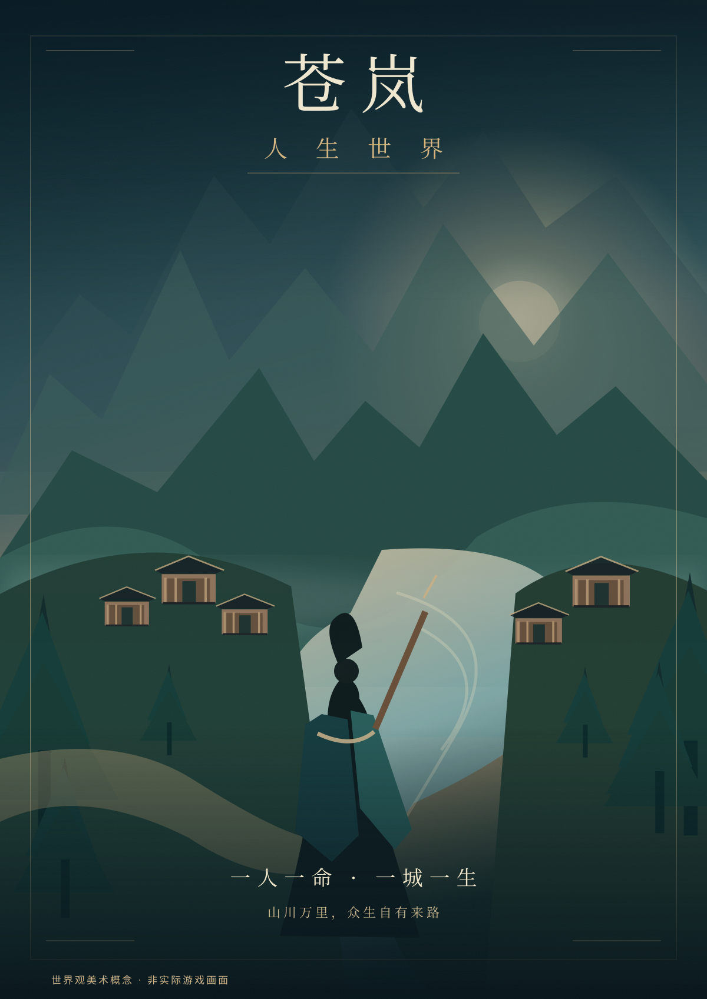
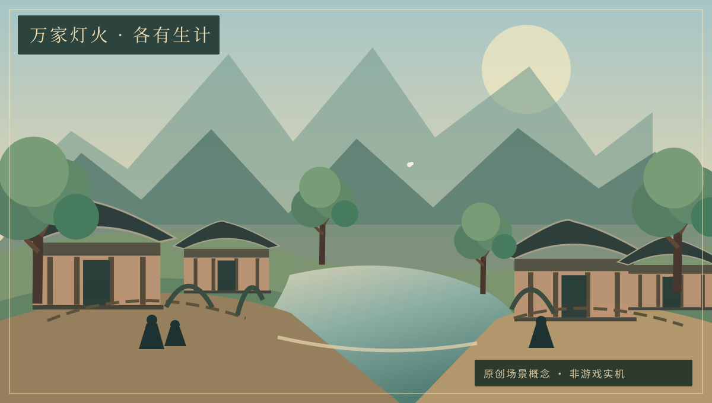
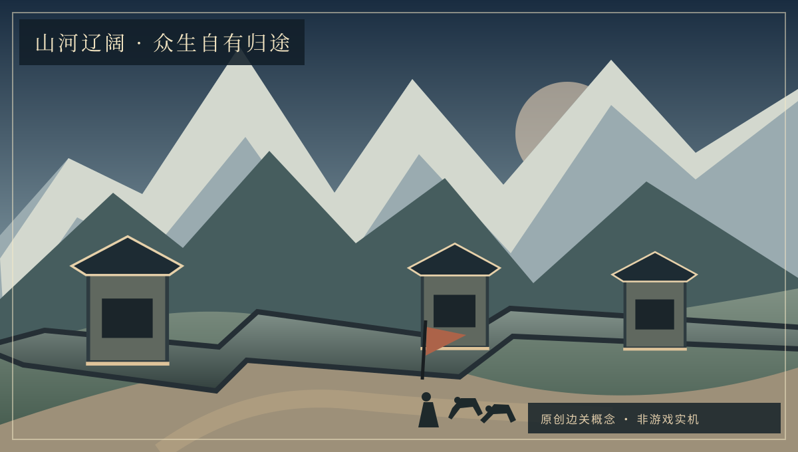

真实世界
不靠堆砌 UI 描述世界，而让地形、建筑和物品在同一个空间里相互影响。
苍岚 · 人生世界
一个仍在塑造中的国风古代开放世界。山川、村落、人物与万物，不该只是背景，而应拥有自己的存在与变化。
你不一定是英雄。商旅、农人、守关者与匠人，同样拥有姓名、去处与命运。下面是我们希望《苍岚》最终呈现的世界感，而不是已经实现的画质。



重要说明：本栏目为原创概念美术/视觉方向参考，不是Godot实机截图，不代表这些场景、人物或画质已经制作完成。真实可玩效果以安装包与实际游戏画面为准。
目前已开通正式签名的游戏内内容热更新：兼容的模型、场景、配置和脚本可通过安全资源补丁更新；涉及 Godot 引擎或 Android 原生组件的变更仍需同证书覆盖安装新 APK。正式更新与开发草案请分别查看下方更新日志和工作日志。
当前正在配置正式签名及公开补丁发布。客户端可以离线运行，绝不会安装未经验证的补丁。
官网自动同步项目正式工作日志：已完成、失败、待处理都如实保留。记录来自源码主分支，测试成功不等于已经正式发布或通过玩家审美验收。
正在读取已发布的工作日志。请稍候。
只列入真实发布的签名更新，不把开发中的人物、美术草案或尚未通过的功能冒充正式内容。最新版本直接读取官方RSA签名清单。
正在读取正式发布记录…
正式更新以游戏内数字签名、SHA-256和兼容性校验为准；网页仅供查询。
不靠堆砌 UI 描述世界，而让地形、建筑和物品在同一个空间里相互影响。
NPC、物资和时间有独立状态与因果，不因玩家存在而失去真实逻辑。
代码与密钥不在公共发布站，发布的资源先经验证才能进入玩家世界。
正在查询已校验的基础安装包。若尚未发布，下载按钮不会出现。
下载已签名 Android APK当前已发布同签名 Android 横屏基础包及独立内容补丁；已安装旧版的玩家可在游戏内检查可兼容的热更新。升级 APK 请同签名覆盖安装，勿先卸载以免清除本地存档。游戏画质和操作效果仍以实机测试为准；网页显示版本信息不替代游戏本身的 RSA 验签。